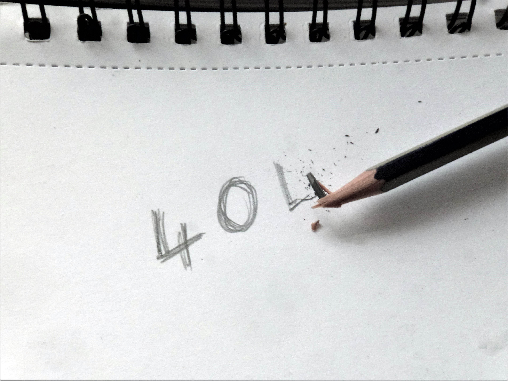

Home
About Us
Gallery
Life Drawing
Price List
Contact

Oops! We seem to have broken our pencil while drawing this page.
While we source a sharpener, why not have a look at these links for some tips:
Drawing for beginners
Amandas Portraits facebook page